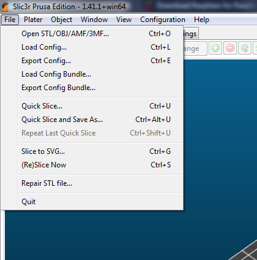
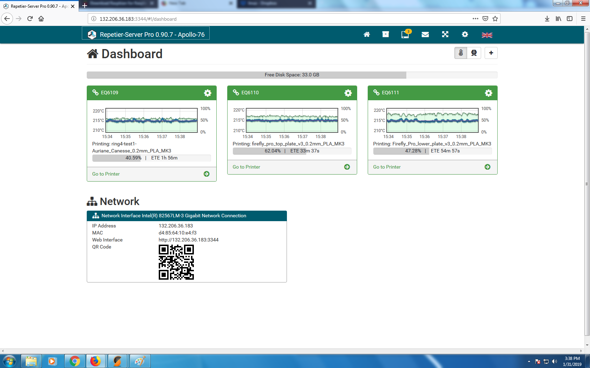
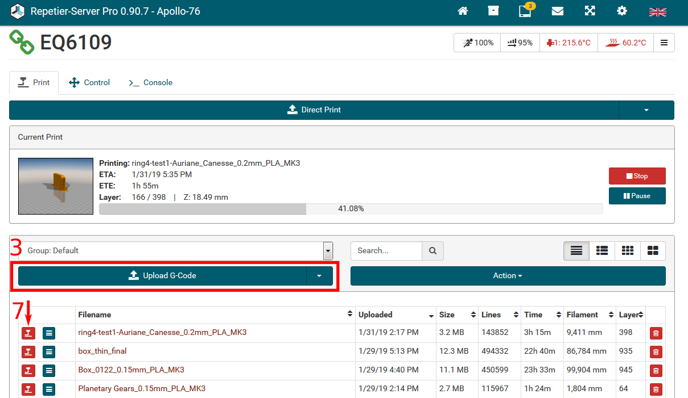
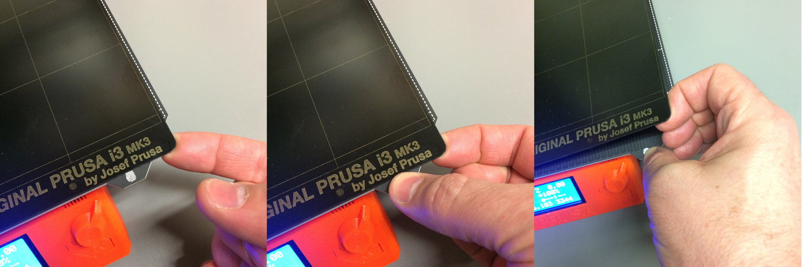

Prusa Training Manual
This document will outline how to print in our lab using the Prusa I3 Mk2. This guide will give you all the basic information you need to know to get from 3D model to a printed piece.
Converting model to GCODE
This guide starts assuming that you have a 3D model ready to go. You can either design your own part from your favorite CAD software, and export it as an STL, or download a model from a source, such as https://www.thingiverse.com/.
Now that we have our model, we need to convert it into code that the 3D printer knows how to deal with --g-code. G-code is a numerical control programming language that will tell the printer exactly how to move in order to print our piece.
In order to convert this software, we are going to use Slic3r.
Load the STL file into Slic3r.
- Orient the object into your preferred orientation.
- You can right click and move around different axes.
- Decide what fill density you want for "solid" volumes of your model.
- 0% is no infill. (Only the outer shell of the model will be printed)
- 100% is fully infilled.
- 15% is a standard infill for most print jobs.
- Decide if you need supports.
- If there are any features that overhang by an angle of more than 45 degrees from vertical, supports are required.
- Select if you want a brim.
- A brim will print a 5mm brim around the layer, which will help with making the print stick to the bed better. This does not consume much time or material, so generally it's advisable.
Click "Slice Now".
Click "Export G-code". 
Repetier server
The printers are connected via a server. Although it is possible to print g-code from an SD card, the required way of printing is through the server.
The server should only be accessed by the local printing computer.
The IP address is 312.206.36.183:3344.
You will get a user login to the Repetier server once you completed an orientation with Robert Turner or the TA.
Printing
- Log onto your account.
- If you don't have an account yet, then you must complete the training with the TA or Robert Turner.
- Choose the printer that you want to access (EQ6109, EQ6110, or EQ6111). 
Upload your G-code to the printer by clicking "Upload G-Code". 
- Make sure the printer is open:
- Nothing being printed.
- Nothing on the print bed.
Remove the spring steel heatbed. It's magnetic! See picture below for a good technique. Remove any fused filament from the bed, and clean it with >90% Isopropanol (Isopropyl alcohol - IUPAC name propan-2-ol; commonly called 2-propanol or IPA) and a fresh, disposable lint-free wipe. Don't touch the cleaned print area of the heatbed with your bare hands or anything else. 
- Make sure there filament is loaded into the printer.
- Make sure there is enough filament for the job. (An estimate of the required amount of filament is provided by the slicer software)
- If you need to load or change color, see the section Changing filament.
- Click the print button next to your G-code on Repetier.
- The filament and heat bed will automatically be preheated.
- The print job will start once the componenents are at temperature.
Note by TB: do we set the temperature somewhere?
- Verify that the print job is starting properly.
- The nozzle will inspect 9 points on the bed for leveling.
- A test strip will be pushed deposited to clean the nozzle.
Wait a few layers to be printed to ensure proper adhesion, maximizing chances of a successful print!
Removing print job
- Once the print job has finished, you should remove the spring steel heatbed with the piece still attached.
- It is attached by magnets. See point 5 in the section Printing above.
- You may need to move the extruder nozzle or stage to better access it, do so by using the mover controls in Repetier.
- Use caution when moving the extruder! Verify, using small steps, which axes and directions in the software correspond to which physical movements in reality!
Flex the metal print bed gently towards and then away from the printed part to break the adhesion.
- Then pull the piece off with your hands.
- If there are small and/or thin pieces, you may want to use one of the 3D printed scrapers to help remove them.
Make sure all printed pieces and extra material are removed from the printed bed, then clean the print bed with IPA and a fresh wipe for the next person.
Replace the bed on the printer.
Throw away all scraps.
Changing filament
Changing the filament is all done on the printer.
All choices and commands are accessed and executed via the main menu and the control knob. Turn to select, press to initiate.
The button marked with an X immediately below the control knob is not used to cancel a command or go up a menu level. It is only used to quickly power cycle the printer.
Preheat the extruder nozzle to PLA setting.
- If a filament is loaded, select "Unload Filament."
- Follow the instructions, and gently but firmly pull out the filament when it tells you to. Do not jerk the filament. If it doesn't remove completely and easily, seek assistance from the TA or RT.
- Do not let go of the end of the filament! Immediately secure it to the holes in the side walls of the spool. If you let go of the end it may snarl up, which will cause problems for the next person using the spool.
- Never leave the end of the filament hanging loose.
- Select the filament you want to load, and put it on the filament arm above the printer.
- Make sure that the filament is not looped around itself and is snag free. If you are concerned that this happened, come and talk to the TA or Robert Turner.
Clip the end of the filament off on an angle such that it has a fresh cleaved end that comes to a point. Throw away all scraps.
On the printer select "Load Filament".
Follow the instructions, inserting the filament when it tells you to do so.
- The printer will then extrude some filament to clean the nozel, and will ask if the correct color is printing.
- If yes, press "yes".
- If no, press "no", and it will run some more filament through.
Remember, this is a brief outline of the printing procedure. If you have any reccomendations or additions that you think should be made, let us know.
You may encounter some errors while printing (print falls off of heating bed, interruption, broken filament). If these happen, either check the FAQs on the website, or consult the Prusa documentation for the printer. Please inform us of any failed prints and any problems with the printer. We aim to improve the printer services and strive to provide reliable rinting.
Log any issues or any major changes that you make, and stop printing immediately if a serious issue arises. Use software controls to cancel a print job. Do not just turn off the printer as this will stop the cooling fan to the filament, which may overheat.